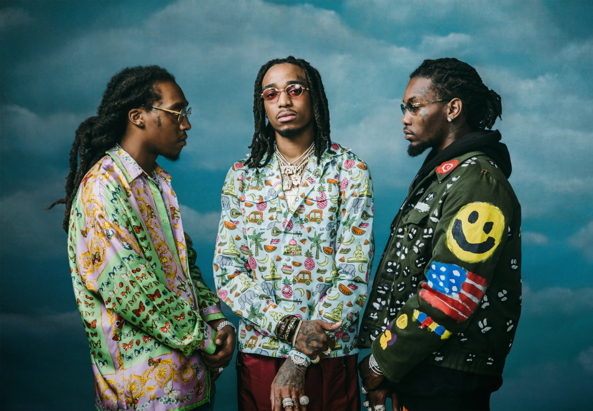
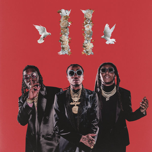

Migos is an American hip hop group founded in Lawrenceville, Georgia, in 2008. The group originally comprised rapper Quavo, his nephew the late Takeoff, and their longtime friend Offset. Quavo was born in Athens, Georgia but grew up in Lawrenceville, Georgia, where Offset and Takeoff were born and raised as well.
Culture II is the third studio album by American hip hop group Migos. It was released on January 26, 2018, by Quality Control Music, Capitol Records and Motown. Culture II is a double album consisting of 24 tracks, and features guest appearances from 21 Savage, Drake, Gucci Mane, Travis Scott, Ty Dolla Sign, Big Sean, Nicki Minaj, Cardi B, Post Malone and 2 Chainz. It was executive produced by Quavo, alongside production work from a variety of collaborators including Metro Boomin, Buddah Bless, Kanye West, Pharrell Williams and Murda Beatz, among others. The album serves as a sequel to Migos' previous album, Culture. Culture II was supported by four singles: "MotorSport", "Stir Fry", "Walk It Talk It" and "Narcos", as well as the promotional single "Supastars". The album received generally positive reviews from critics and debuted at number one on the US Billboard 200. It is Migos' second US number-one album.

January 26, 2018
1 Hour, 45 Minutes
Quality Control Music, Capitol Records and Motown
1. Higher We Go (Intro)
2. Supastars
3. Narcos
4. BBO (Bad Bitches Only)[feat. 21 Savage]
5. Auto Pilot (Huncho On The Beat)
6. Walk It Talk It (feat. Drake)
7. Emoji A Chain
8. CC (feat. Gucci Mane)
9. Stir Fry
10. Too Much Jewelry
11. Gang Gang
12. White Sand (feat. Travis Scott, Ty Dolla $ign & Big Sean)
13. Crown The Kings
14. Flooded
15. Beast
16. Open It Up
17. MotorSport (with Nicki Minaj & Cardi B)
18. Movin' Too Fast
19. Work Hard
20. Notice Me (feat. Post Malone)
21. Too Playa (feat. 2 Chainz)
22. Made Men
23. Top Down On Da NAWF
24. Culture National Anthem (Outro)